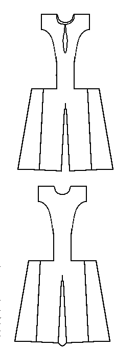

This garment is referred to in Museo de Telas Medievales as Pellote de Leonora de Castilla, Reina de Arag�n (c.1225-1275).
Return to Contents
Some Clothing of the Middle Ages - Tunics - Fernando de la Cerda's Pellote, by I. Marc Carlson, Copyright 1998 This code is given for the free exchange of information, provided the Author's Name is included in all future revisions, and no money change hands-